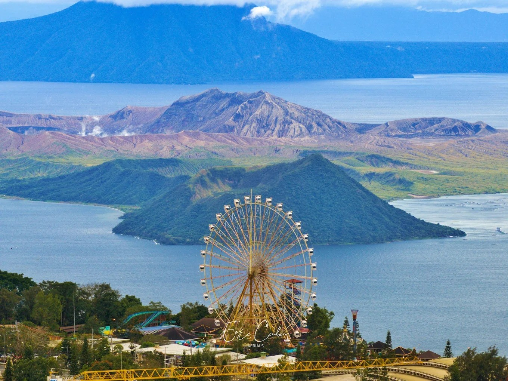

Tagaytay is a popular holiday town south of Manila on the Philippine island Luzon. Known for its mild climate, it sits on a ridge above Taal Volcano Island, an active volcano surrounded by Taal Lake. Overlooking the area, People’s Park in the Sky occupies the grounds of a never-finished presidential mansion. Picnic Grove is a recreation area with trails and a zip line.
Tagaytay, which is officially called the City of Tagaytay, is a component city in Cavite province.
Tagaytay City is located in the province of Cavite, Philippines. It covers an area of approximately 65 square kilometers and has an elevation of 709 meters above sea level. The city is divided into several neighborhoods, including Maharlika East, Asisan, Dapdap West, Zambal, and more.
The current mayor of Tagaytay City is Abraham Tolentino. He has been serving as the mayor since 2013 and is dedicated to the progress and development of the city.